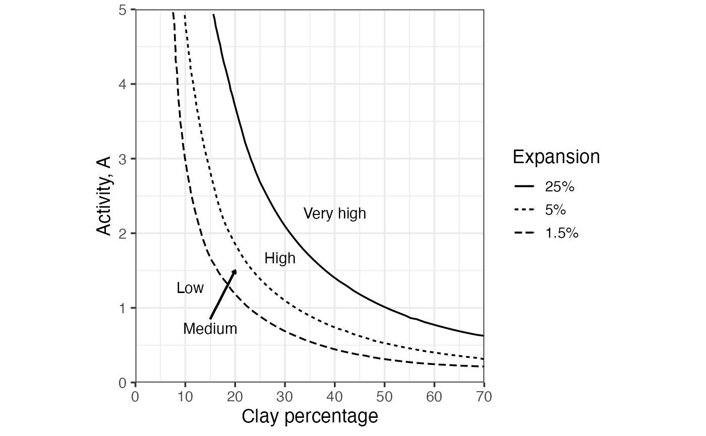
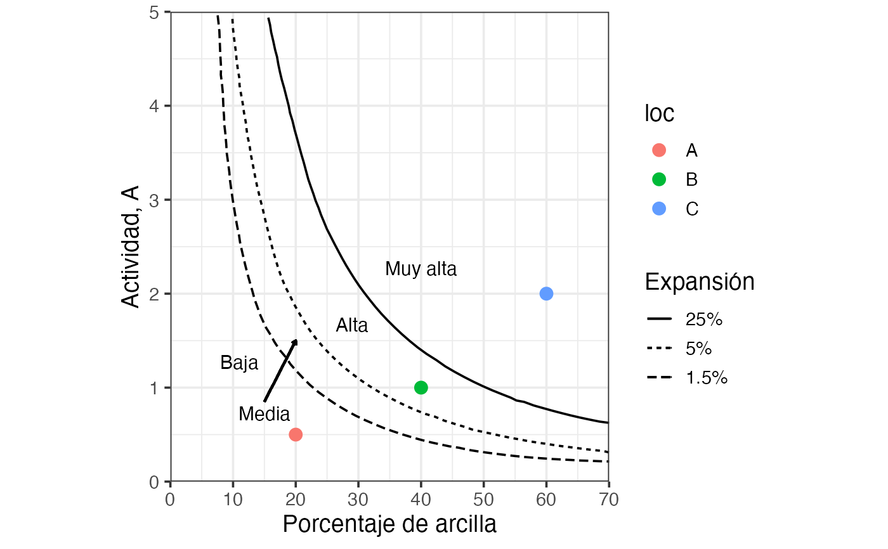

Draws a soil swelling potential chart—clay activity vs clay percentage—with three boundary curves separating zones of low, medium, high, and very high swelling potential. Boundary curves are drawn; each zone is labelled directly on the chart with.
Value
A ggplot object with clay percentage on the x-axis and
clay activity on the y-axis, containing the three boundary curves
coloured by expansion level ("1.5%", "5%", "25%") and their zone
labels ("Low" / "Medium" / "High" / "Very high").
References
Holtz, R. D., Kovacs, W. D., & Sheahan, T. C. (2023). An Introduction to Geotechnical Engineering (3rd ed.). Pearson Education.
See also
Other classification plots, soil mechanics:
Casagrande_chart(),
clay_activity(),
soil_collapse(),
soil_expansion(),
ternary_shepard(),
ternary_usda()
Examples
# English labels (default)
soil_swelling()

dat = data.frame(
clay = c(20, 40, 60),
activity = c(.5, 1, 2),
loc = c("A", "B", "C")
)
# Spanish labels
soil_swelling(lang = "es") +
ggplot2::geom_point(data = dat,
ggplot2::aes(x = clay, y = activity, color = loc),
size = 3,
inherit.aes = FALSE # needed
)
